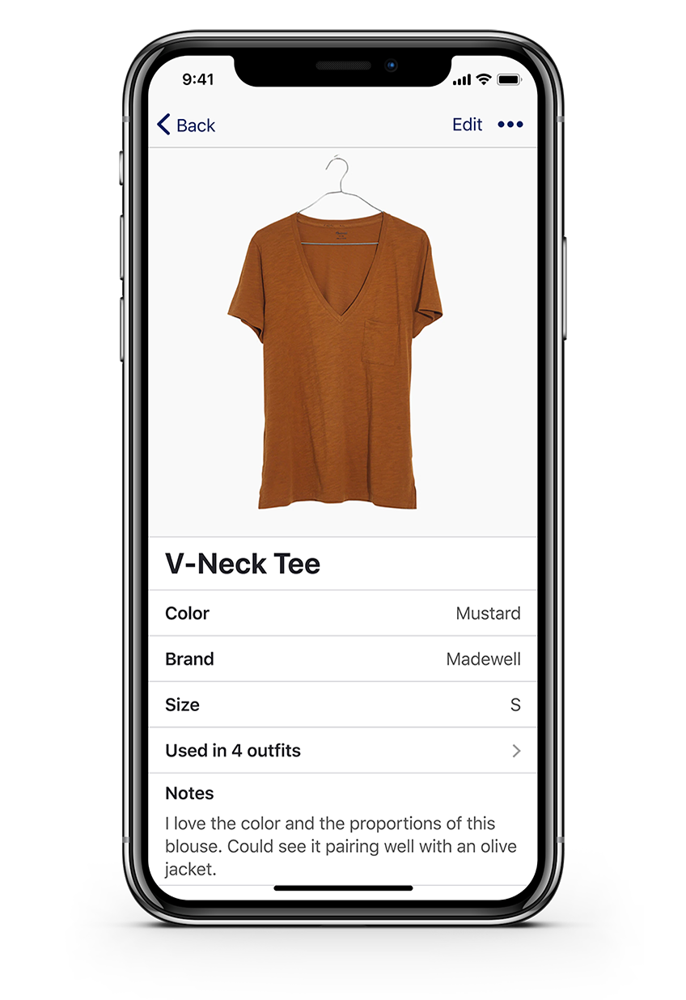

Wardrobe - curating personal style
For anyone who’s ever rummaged through their closet and felt like they had nothing to wear.
With the ability to inventory clothing, create outfits, and save style inspiration, users can feel confident in their personal style and dress for success — whatever success means to them.
See Prototype Design Roles
- UX Design
- Visual Design
- Brand & Identity
Deliverables
- Competitive Analysis
- User Surveys
- User Personas
- User Stories & Flows
- Wireframes
- User Testing
- Brand Identity
- Visual Design
- High Fidelity Prototype
Tools
- Figma
- Lucidchart
- InVision
- Maze
- Google Forms
The Problem
What to wear is never really taught - it’s just something people pick up (or don’t pick up) along the way. Individuals who didn’t pick it up are then thrown into many different social situations they’re unprepared for and are at a loss as to what to wear.
Young professionals, in particular, often find managing their wardrobes challenging. Many are still in the process of discovering their personal style, while navigating the world of professional dress codes for the first time. They struggle to strike the balance between expressing individualism and blending in with their environment. How can Wardrobe help these users?
The Solution
The Wardrobe app alows users to track their clothes in a virtual closet, create new outfits and track outfits worn, and save style inspiration. It encourages users to be intentional about what they wear, how they organize their clothing, and how they present themselves to the world. Wardrobe doesn’t push any individual styles or trends, but encourages users to experiment and figure out what works for their lifestyle.
"There is no roadmap to style. It's about self-expression, and, above all, attitude."-Iris Apfel